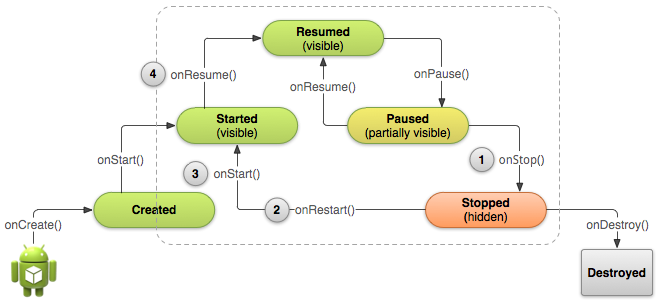

停止与重启Activity
编写:kesenhoo - 原文: http://developer.android.com/training/basics/activity-lifecycle/stopping.html
恰当的停止与重启我们的activity是很重要的，在activity生命周期中，他们能确保用户感知到程序的存在并不会丢失他们的进度。在下面一些关键的场景中会涉及到停止与重启：
- 用户打开最近使用app的菜单并从我们的app切换到另外一个app，这个时候我们的app是被停止的。如果用户通过手机主界面的启动程序图标或者最近使用程序的窗口回到我们的app，那么我们的activity会重启。
- 用户在我们的app里面执行启动一个新activity的操作，当前activity会在第二个activity被创建后stop。如果用户点击back按钮，第一个activtiy会被重启。
- 用户在使用我们的app时接收到一个来电通话.
Activity类提供了onStop()与onRestart()方法来允许在activity停止与重启时进行调用。不同于暂停状态的部分阻塞UI，停止状态是UI不再可见并且用户的焦点转移到另一个activity中.
Note: 因为系统在activity停止时会在内存中保存Activity的实例，所以有时不需要实现onStop(),onRestart()甚至是onStart()方法. 因为大多数的activity相对比较简单，activity会自己停止与重启，我们只需要使用onPause()来停止正在运行的动作并断开系统资源链接。

Figure 1. 上图显示：当用户离开我们的activity时，系统会调用onStop()来停止activity (1). 这个时候如果用户返回，系统会调用onRestart()(2), 之后会迅速调用onStart()(3)与onResume()(4). 请注意：无论什么原因导致activity停止，系统总是会在onStop()之前调用onPause()方法。
停止activity
当activity调用onStop()方法, activity不再可见，并且应该释放那些不再需要的所有资源。一旦activity停止了，系统会在需要内存空间时摧毁它的实例(和栈结构有关，通常back操作会导致前一个activity被销毁)。极端情况下，系统会直接杀死我们的app进程，并不执行activity的onDestroy()回调方法, 因此我们需要使用onStop()来释放资源，从而避免内存泄漏。(这点需要注意)
尽管onPause()方法是在onStop()之前调用，我们应该使用onStop()来执行那些CPU intensive的shut-down操作，例如往数据库写信息。
例如，下面是一个在onStop()的方法里面保存笔记草稿到persistent storage的示例:
@Override
protected void onStop() {
super.onStop(); // Always call the superclass method first
// Save the note's current draft, because the activity is stopping
// and we want to be sure the current note progress isn't lost.
ContentValues values = new ContentValues();
values.put(NotePad.Notes.COLUMN_NAME_NOTE, getCurrentNoteText());
values.put(NotePad.Notes.COLUMN_NAME_TITLE, getCurrentNoteTitle());
getContentResolver().update(
mUri, // The URI for the note to update.
values, // The map of column names and new values to apply to them.
null, // No SELECT criteria are used.
null // No WHERE columns are used.
);
}
activity已经停止后，Activity对象会保存在内存中，并在activity resume时被重新调用。我们不需要在恢复到Resumed state状态前重新初始化那些被保存在内存中的组件。系统同样保存了每一个在布局中的视图的当前状态，如果用户在EditText组件中输入了text，它会被保存，因此不需要保存与恢复它。
Note: 即使系统会在activity stop时停止这个activity，它仍然会保存View对象的状态(比如EditText中的文字) 到一个Bundle中，并且在用户返回这个activity时恢复它们(下一小节会介绍在activity销毁与重新建立时如何使用Bundle来保存其他数据的状态).
启动与重启activity
当activity从Stopped状态回到前台时，它会调用onRestart().系统再调用onStart()方法，onStart()方法会在每次activity可见时都会被调用。onRestart()方法则是只在activity从stopped状态恢复时才会被调用，因此我们可以使用它来执行一些特殊的恢复(restoration)工作，请注意之前是被stopped而不是destrory。
使用onRestart()来恢复activity状态是不太常见的，因此对于这个方法如何使用没有任何的guidelines。然而，因为onStop()方法应该做清除所有activity资源的操作，我们需要在重启activtiy时重新实例化那些被清除的资源，同样, 我们也需要在activity第一次创建时实例化那些资源。介于上面的原因，应该使用onStart()作为onStop()所对应方法。因为系统会在创建activity与从停止状态重启activity时都会调用onStart()。也就是说，我们在onStop里面做了哪些清除的操作，就该在onStart里面重新把那些清除掉的资源重新创建出来。
例如：因为用户很可能在回到这个activity之前已经过了很长一段时间，所以onStart()方法是一个比较好的地方来验证某些必须的系统特性是否可用。
@Override
protected void onStart() {
super.onStart(); // Always call the superclass method first
// The activity is either being restarted or started for the first time
// so this is where we should make sure that GPS is enabled
LocationManager locationManager =
(LocationManager) getSystemService(Context.LOCATION_SERVICE);
boolean gpsEnabled = locationManager.isProviderEnabled(LocationManager.GPS_PROVIDER);
if (!gpsEnabled) {
// Create a dialog here that requests the user to enable GPS, and use an intent
// with the android.provider.Settings.ACTION_LOCATION_SOURCE_SETTINGS action
// to take the user to the Settings screen to enable GPS when they click "OK"
}
}
@Override
protected void onRestart() {
super.onRestart(); // Always call the superclass method first
// Activity being restarted from stopped state
}
当系统Destory我们的activity，它会为activity调用onDestroy()方法。因为我们会在onStop方法里面做释放资源的操作，那么onDestory方法则是我们最后去清除那些可能导致内存泄漏的地方。因此需要确保那些线程都被destroyed并且所有的操作都被停止。